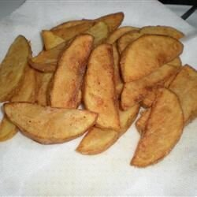

Fried Potato Wedge

Description
Spicy thin-sliced potato wedges fried to perfection.
Ingredients
- 4 cups vegetable oil
- 5 small russet potatoes
- 1 cup all-purpose flour
- 2 teaspoons chili powder
- 2 teaspoonschicken bouillion granules
- 2 teaspoons paprika
- 1 teaspoon ground black pepper
- 1 teaspoon ground cayenne pepper
- 1 cup milk
Steps:
- Heat oil in a deep-fryer or large saucepan to 375 degrees F (190 degrees C).
- Slice potatoes into 16 wedges.
- Combine flour, chili powder, chicken bouillon, paprika, black pepper, and cayenne in a 1-gallon resealable plastic bag.
- Dip potato wedges in milk, then shake them in the flour mixture. Fry in the hot oil until golden brown, 5 to 6 minutes per batch. Let drain on paper towels.
Return to main page.